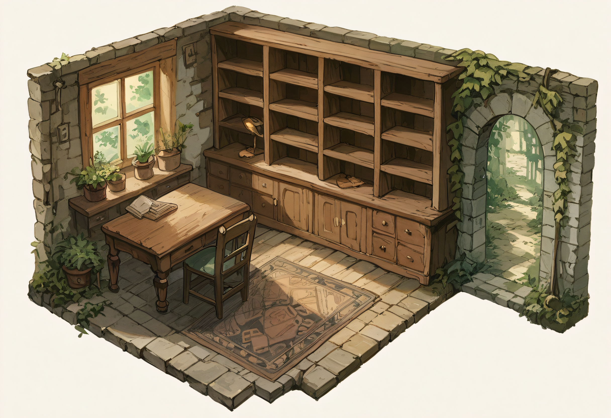

phaser · mode5 · ux wireframe
A structure-and-flow wireframe for Mode 5's forage, cast, HUD-nav, traversal and learn-a-spell
controls — read alongside the screens they'd have to stay consistent with if built
(satchel.html, spellbook.html, save-load.html, options.html)
and the tokens in design-system.html. Not final art — composition and copy only, so the
flow can be argued about before any Phaser code changes. Grounded in what's actually shipped today:
CollectScene.ts, HotspotSystem.ts, ReceiverHotspots.ts,
HedgeCastPrompt.ts, TraversalRow.ts, NpcTalkSystem.ts,
SpellTrialScene.ts, Knowledge.ts.
Revision 2 — folds in review notes: discovery-gated pickup identity, a known-spells-only picker with the plausibility ranking pulled back to an opt-in hint level, a new Options setting for that, and a proposed learn-a-spell arc (clue → a taught moment → trial-cast from what you're carrying or, at Home, what's banked).
Revision 3 — checks the learn-a-spell arc against the real, already-built
NotebookScene.drawSpellbook() instead of an invented panel, and applies the same loop to
two screens with no proposal yet: SatchelScene.ts has no way to drop or manage what you
carry, and HubScene.ts's decoration palette and chrome could use the same notice/act
fixes as the HUD nav row.
Revision 4 — closes all eight open questions from the revision-2/3 pass, Roc's call on each: the cast-on-a-thing picker reads as the spellbook itself, not a generic modal (§2); a trial cast draws from Satchel and Banked at once, no toggle (§6); satchel management gets a move action alongside drop, constrained by a free hand and an empty target pocket, and drop-confirmation becomes a setting defaulting to "only when a known spell needs it" (§7); and Home Hub keeps the shelf close-up as a genuinely separate view from room zoom, keeps chest and counter pending a real name check, keeps both grid and free-drag slot shapes depending on the surface, and treats room zoom as a scale on the existing view rather than a second projection (§8).
Revision 5 — two more, both extensions of behavior already shipped, not new mechanics. The
Notebook's locked "to learn" rows mask the phrase and teacher as ??? until
hasSeen() is true — today's build already names both upfront for spells nobody's ever
mentioned (§6). And the Home Hub palette's existing N found so far note gets its missing
other half: X of Y found, where Y is the same collectible-item count the
code already computes, just without the discovery filter (§8).
Every control below should read as one step in the same five-beat loop — a player should always be able to tell which beat they're on. Today's controls skip straight from notice to done, with no beat in between to invite curiosity.
Today a hotspot is a mystery dot; the click is the pickup — there's no beat between
notice and done. The fix is one look before the take — and the look itself is honest about what
you actually know: a card names the item once you've held one before, and stays a mystery until
then, tracked off Inventory.discoveredIds() (the same "ever held" set
HubScene's decoration palette already reads) — no new state to invent.
HotspotSystem.ts's dot fires
ink.player.pickup(...) straight off pointerdown — nothing renders
between "notice" and "in the satchel." Even the label is withheld until after: the status line
only ever says "something's out there."discoveredIds() is
per item type, not per hotspot instance, so the reveal is permanent once earned and travels with
the player, not the location. Name and flavor pull straight from
content/items/*.json's own description, never invented.Today's modal offers a real choice ("Cast") beside a dead one ("Use" always answers
the same line, HedgeCastPrompt.ts:111) and then hands over the spellbook unsorted.
It's already limited to spells you know (knowledge.spellbook() — this file's first pass
undersold that), so the actual fix is narrower than "filter": drop the dead option, keep the list flat
and known-only, and stop there — no plausibility ranking baked into the list itself. Guessing
which known spell might work is the point; see §3 for where the "worth trying"
idea from the first pass moved instead.
"You check the satchel — nothing you're carrying does that." every time,
regardless of what's held. A stub left visible reads as a broken promise, not a choice.knowledge.spellbook(), laid out in learn order with
no further structure. That part was already right; four flat columns just isn't a good shape
for a list this size.knowledge.spellbook(),
flat and unranked, in a single readable column instead of a 4-up grid — no plausibility sort, no
dimming, nothing telling the player which one is "right." Guessing stays the point: the components
are visible on the spell (open the notebook to check), the receiver isn't. One page, one step, not
two. Decided (revision 4): it's a parchment page, not a leather modal — see below.Decided (revision 4) — the picker reads as the book. The
Notebook's own spellbook tab (NotebookScene.drawSpellbook()) is already an open leather
book with parchment pages, ported from spellbook.html. Roc's call: casting on something
should feel like paging through your own spellbook to find the line, not filling out a generic
prompt — so the picker adopts that language rather than the dark leather-modal family every other
prompt uses. The plain-modal version below is kept only as the option that was considered and set
aside.
ModalFrame already does this), quick in and out. Reads as a quick prompt, which is
exactly why it was set aside: casting shouldn't read as a quick prompt.ModalFrame (a new panel shape), accepted because
the book feeling is the point.HedgeCastPrompt.ts's delayedCall), and that's the whole beat.
A heated stone now exists in the world, and nothing on screen says so.produces chain (item_heated_stone → temper's components),
not invented per-spell copy. This one hint stays — it lands after the fact, once curiosity
already paid off, rather than steering the guess beforehand. Shown at the default hint level; see
§3 for the setting that turns it up or off.The "worth trying" ranking from the first pass was too strong as the only mode — it
pre-solves the guess. But it isn't a bad idea, it's a strong hint, and some players want more
scaffolding than others. So it becomes an option instead of a default: one new setting, same shape as
the two real ones PlayerSettings.ts already persists (a localStorage key,
clamped/validated, outliving a save slot), shown as the segmented control the Options mockup already
draws for Text Speed — no new control language.
? tooltip (§5) stays available regardless of this setting — it's a reveal
the player already chose to ask for, not something pushed at them.components you hold ∩ this receiver's class — just whether
it's shown before the guess or only after.
A blocked move already reads as "a fact, not an error" in color (the 2026-08-20 pass
moved it off danger red) — but the pill text itself is still debug output. Fiction-first
label, mechanical reason behind a tap-to-reveal.
TraversalRow.ts's DEBUG_GATE_HINTS flag prints the raw
gate rule inline, always on — useful for playtesting, but it's the only copy a real player would
ever see too.Not a fix to something shipped — a proposed shape for something only half-built.
Knowledge.ts already tracks two real states, seen (a clue) and
learned (confirmed by a successful cast), and NpcTalkSystem.ts already gives
clues and SpellTrialScene.ts already lets you guess components from what you're
carrying. What's missing is the middle beat — the moment an NPC actually teaches you, not
just mentions something exists — and a way to try from what's banked at Home, not only the
satchel. Checked against NotebookScene.drawSpellbook() below: the clue and the Try
button are already exactly where this sequence needs them to land — nothing about the book's own
layout needs to change, only what feeds it.
shareClueOnFirstTalk fires this,
unprompted, the first time you talk to a role-holder each day. Today it's a floating modal
line; here it's restyled into the VN box mode5 already runs everywhere else, so it reads as
the Baker saying it.knowledge.see()
— instead opens a short 2–3 line VN beat before landing the clue. The line isn't invented: every
spell already authors a learn_source field (content/magic/portion.json,
quoted above near-verbatim) that no UI currently shows the player at all.3 · it's already in your spellbook. No new screen —
this is NotebookScene.drawSpellbook() as it exists today, ported straight from
spellbook.html. "Portion" lands in the left page's KNOWN group as a
"seen · try it" row the moment knowledge.see() fires in step 2, no extra wiring. The
right detail page already shows the full component list for a clue, on purpose — Roc's 2026-08-13
ruling was "a clue should say what it needs, not just name the spell," so the trial in step 4 is a
confirming ritual, not a blind guess.
NotebookScene.ts's
drawIndexPage() already filters the "to learn" list to
!knows(id) && !hasSeen(id), then still prints the real phrase and the real
learn · role for every row in it — every spell in the game is named and its teacher
identified before any neighbour has ever mentioned it. The fix is narrow: when a row is locked, show
??? and "not yet mentioned" instead of the real strings. The moment hasSeen()
flips true — the exact clue beat in step 2 above — the row moves out of "locked" into the seen-clue
group and both are revealed together, same as today. No new state: Knowledge.ts already
has exactly the seen/learned pair this needs, nothing lighter to add.
4 · confirm, from what you hold. "Try" launches
SpellTrialScene exactly as it does today — pick components from what's reachable,
submit, an exact match learns it. One addition: at Home, the same picker also offers what's
banked, not only the satchel. Decided (revision 4): both pools are live at once, not a
toggle — a trial cast can mix a satchel item and a banked one in the same attempt.
SpellTrialScene.held() reads
Inventory.availableOn(null) — the satchel, always-available materials, and world items
on screen. It never reads view.banked, and nothing in Inventory models "at
Home" as a location the trial can check. This is not a toggle to wire up — it's a second source feeding
the same chip row, the way HubScene's discoveredOnly already threads a
similar gate elsewhere — not a big change, but a real one, not just a UI skin.
What this doesn't change. The confirm rules stay exactly as authored — an exact component match, one try at a time, no partial credit — this only changes where the "give" beat lives and what you can try casting with, not how confirmation works.
SatchelScene.ts is view-only. Click a pocket, the parchment inspect card
on the right shows kind, name, description, and which known spells it's carried for — that
card is already a good "examine" beat, the same shape as §1's hover card. But there's no act:
no button anywhere drops an item, and Inventory itself has no method that removes one at
the player's discretion — the one comment in the file about removal is about a separate consumed-count
ledger, not this. Today the only way a pocket empties is pack-triage, forced when foraging with
a full satchel. There's no voluntary version.
save-load.html uses for "Start over," not
a new color invented for this). The warning line reuses data the card already computes —
pocket.carriedFor — so dropping something a known spell needs is an informed choice,
not a silent loss. This is the same "examine before you act" idea as §1's hover card, applied to
giving something up instead of picking it up. Decided (revision 4): this warning is a
setting, not a fixed rule — see below.Decided (revision 4) — drop-confirmation is a setting.
Same shape as §3's hint-strength control: a persisted choice in Options, not hardcoded behavior.
Default is only warn when a known spell needs the item — exactly the carriedFor
check shown above — with an always warn option for players who'd rather be asked every time.
No new control language; it's another row in the same Options panel §3 already proposes.
A real gap, not out of scope: rearranging what's in the satchel should be possible without dropping and re-taking. Roc's rule — you need a free hand to hold what you're moving, and the target pocket has to be empty to receive it. Functionally this can be built as drop-then-pickup under the hood; what matters is that it reads as one continuous move on screen.
Inventory.held directly —
effectiveSatchel() reconciles it against view.satchel, the pool array
LanternPlayer (ink-side) owns. Both drop and move need a real method on
Inventory that doesn't exist yet, and each has to land on both sides of that
reconciliation or the pocket will reappear the next time the view resyncs. Flagging this so it's
scoped as the two-sided fix it is, not a one-file button add.
Same five-beat loop as §0, checked against HubScene.ts. The good news:
act is already solid — free drag on a soft grid, scroll to resize, already the recommended
direction in FINDINGS.md. Three rougher spots, all in the parts the loop calls
notice and learn.
drawPalette() draws plain text pills — the exact look of a debug
button row, not an object you'd want on a shelf. The satchel already solved this with real SVG
material icons; the hub never adopted them.SatchelScene already loads
(public/art/ui/satchel/*.svg), reused rather than redrawn — one icon set, two
screens, matching §11 of the style guide's own rule about not redrawing icons per screen.
Decided (revision 5): a found-count sits above the row. Not new data —
HubScene.ts's drawPalette() already renders
${palette.length} found so far when discoveredOnly is set; the
denominator is the same items.filter(collectible && persistence !== "world") list,
just run without that gate. "12 of 34" here is illustrative, not a real content count.Checked against the real backdrop, lantern-projects/v01/images/home-hub-diorama.png
(below, unedited) — Roc's reference for a close-up shelf view is the same shelving unit, drawn
front-on instead of at the room's isometric angle. Worth building, but it exposes a real gap: today's
HOME_SURFACES has exactly one entry for that whole unit — id: "shelf", a
single 12%×7% zone — and Decor.occupant(surfaceId) allows one placement per
surface, full stop. The art has sixteen open cubbies; the code has one slot. Room zoom (below)
doesn't replace this — it's a scale on the same isometric image, and the shelf close-up is a genuinely
different projection no amount of zoom produces.

HOME_SURFACES's actual authored rect for
"shelf" — roughly eyeballed against the real art here, not pixel-measured. It covers
one shelf-row, not the sixteen-cubby grid the piece obviously has.shelf-r0c0 through shelf-r3c3, each a real Surface in the
existing model — more entries, same shape, not a new system. Standing in with CSS here, not the
real asset, until the reference is exported as a game backdrop.surfaceId: "shelf-r1c2" — Decor.place() already threads a surface id
through in slots mode, this just needed more of them), never a raw x/y against either specific image.
Each view then owns its own small rect table for the sixteen ids — the same hand-authored-rect
pattern the project already uses for hotspots and regions (HotspotPlacement, Lantern's
region editor) — and rendering a placement is "look up this cubby's rect in this view's
table," nothing more. That's what makes "stays in the same relative place" true by construction
instead of something to get right by eye.
HubScene.create() draws the backdrop at one fixed cover-fit scale and
never touches it again — no zoom, no pan, the whole room or nothing. Roc wants scroll-to-zoom and
drag-to-pan on the room view itself. That's a different interaction from the "look around" pan
PanModel.ts already gives CollectScene: that one holds a fixed
blow-up (PAN_ZOOM = 1.22) and drifts toward wherever the pointer happens to be — ambient,
for atmosphere while reading dialogue. Placing something precisely in a sill pot wants the opposite:
a deliberate zoom level the player sets, and a pan that only moves when they drag for it. Same
underlying shape (scale, offset, slack — panFit()'s own math already models exactly
that triangle), driven by different input.
ReceiverHotspots/pockets already
use elsewhere for hover-scale, just continuous. A visible Fit control is the escape hatch
— without one, a player zoomed into the desk has no obvious way back to the whole room.chip.setInteractive({ draggable: editable })). A drag that starts ON a piece must
move the piece; a drag starting on empty backdrop must pan the room. Phaser's own hit-testing
already resolves that order — the piece's interactive zone simply has to sit above the pan
listener, not a new problem to invent.Reconciled HOME_SURFACES against the real backdrop, not against the code's
own labels. Sill and floor hold up — the window sill with its three pots, the rug by
the door, both clearly visible. Table doesn't exist yet as a surface at all, though the desk
with a book already on it is the single most obvious flat surface in the whole room. Chest and
counter are harder to place with confidence — nothing in the art reads unambiguously as either
one, though the cabinet doors and drawers under the shelf are furniture they could plausibly have
meant. GAPS.md's own G14 already flags why: "regions.json has geometry for T1 only,
and none for HOME at all" — every one of these five rects was hand-eyeballed once, never checked
against the art the way a real screen's hotspots are.
sill, shelf,
table, and chest/counter (kept, not cut — the names get
checked against the art through this same pass rather than renamed on a guess) through the same tool
T1 used, instead of adding a sixth guessed rect by hand. And once real geometry exists, the same
multi-slot fix §8's shelf finding calls for isn't shelf-only — the sill already visibly holds three
pots at once, and the desk has room beside the book. One occupant per surface was never going to be
enough for any of these, not just the one with sixteen cubbies. Decided (revision 4): both slot
shapes stay, matched per surface — grid cells where the surface is naturally gridded (the shelf's
sixteen cubbies), free-drag zones where it isn't (table, floor, sill). Every placement is stored
against a surface/cubby id, never a raw x/y, which is what makes it possible to render the same
placement correctly in both the room view and a close-up view without the two ever needing to agree
on a shared coordinate space.
The fixes above as a single sequence, in the fiction: forage a never-seen-before item, notice a stone, try a known spell blind, get pointed at what's next — the loop from §0, played out at the default (Subtle) hint level.